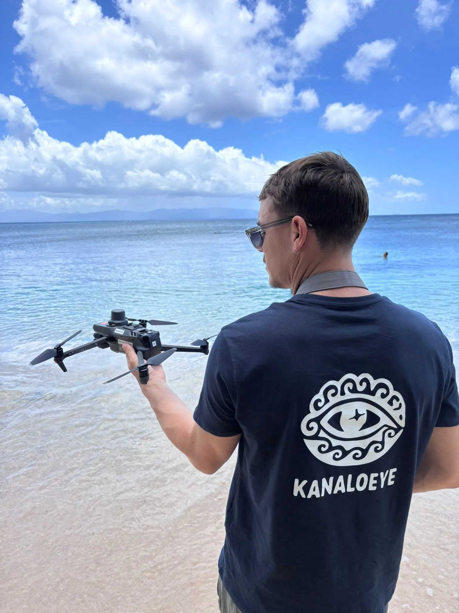

Sébastien Cnudde — Télépilote drone en Guadeloupe
Fondateur de KanaloEye, télépilote certifié DGAC (CATS), équipé d'un DJI M3M Multispectral RTK. Basé en Guadeloupe, interventions dans toutes les Antilles françaises.
Demander un devis
Sébastien Cnudde, télépilote drone professionnel en Guadeloupe
Sébastien Cnudde, fondateur de KanaloEye, est télépilote professionnel certifié DGAC (CATS). Habitué des processus de demande d'autorisation de vol, il garantit des missions conformes à la réglementation européenne UAS sur l'ensemble de l'archipel guadeloupéen et des Antilles françaises.
Il maîtrise la chaîne complète : acquisition par drone, post-traitement photo et vidéo, montage vidéo, traitement photogrammétrique (Agisoft Metashape), analyse SIG (QGIS, Global Mapper) et livraison de livrables exploitables. Son ordinateur de traitement haute performance lui permet de réaliser des modélisations 3D lourdes — nuages de points denses, orthomosaïques grand format — directement depuis la Guadeloupe.
DJI Mavic 3 Multispectral — Module RTK
Le drone utilisé est un DJI Mavic 3 Multispectral (M3M), un appareil professionnel conçu pour les missions techniques. Il combine une caméra RGB haute résolution pour la photographie et la vidéo 4K, et une caméra multispectrale à 4 bandes (vert, rouge, red edge, proche infrarouge) pour l'analyse de la végétation et l'agriculture de précision.
Le module RTK embarqué assure un positionnement centimétrique (~2 cm) en temps réel, sans nécessiter de points d'appui au sol (GCP). Cette précision est essentielle pour la topographie, la cartographie et la photogrammétrie professionnelle.
L'ensemble de la chaîne de traitement est réalisée en interne — pas de sous-traitance — ce qui garantit la qualité des livrables et la confidentialité des données.
KanaloEye — Guadeloupe & Antilles françaises